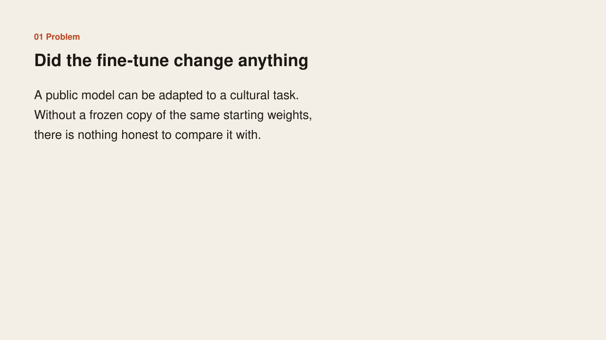
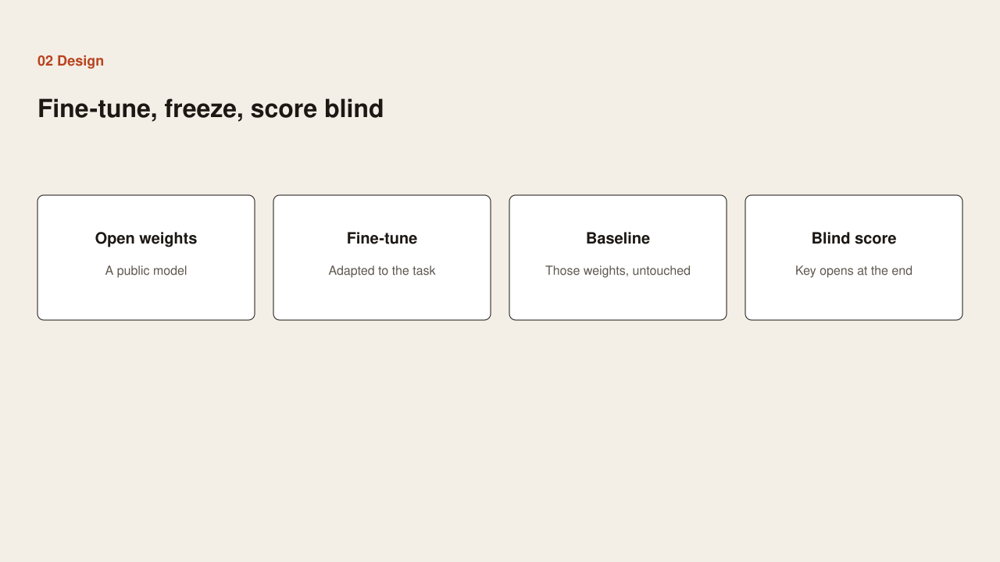
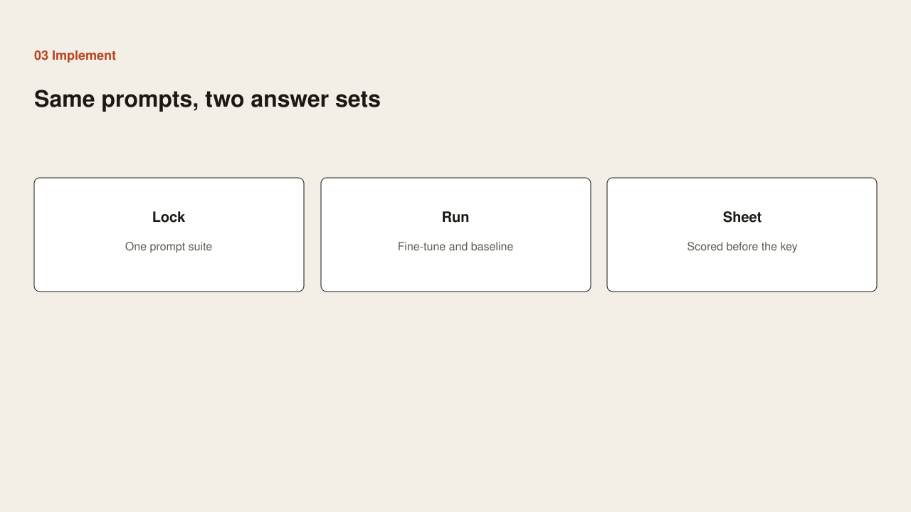
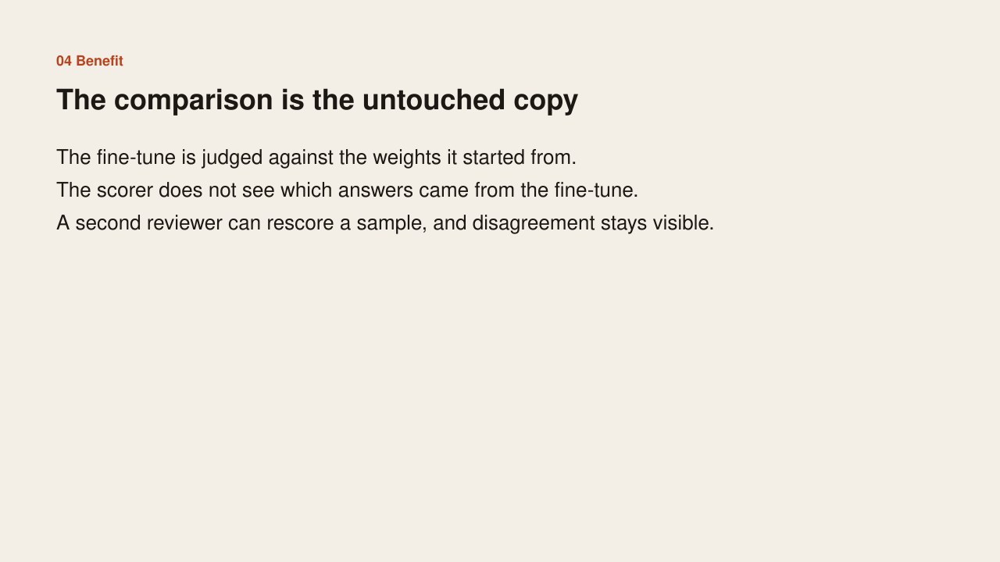

Problem
Problem

A public model can be adapted to a cultural task. Without a frozen copy of the same starting weights, there is nothing honest to compare the fine-tune with.
Case study
Problem

A public model can be adapted to a cultural task. Without a frozen copy of the same starting weights, there is nothing honest to compare the fine-tune with.
Design

Start from open weights. Fine-tune a copy for the cultural task. Keep a frozen copy of those same weights as the baseline. Score both answer sets blind, and open the key only after the sheet is done.
Implementation

Lock one prompt suite. Run it on the fine-tune and on the untouched baseline. Score the sheet before the key is opened. Allow a second reviewer to rescore a sample.
Benefit

The fine-tune is judged against the weights it started from. The scorer does not see which answers came from the fine-tune. Disagreement on a resample stays visible. The training recipe, prompts, and score key are not in this note.